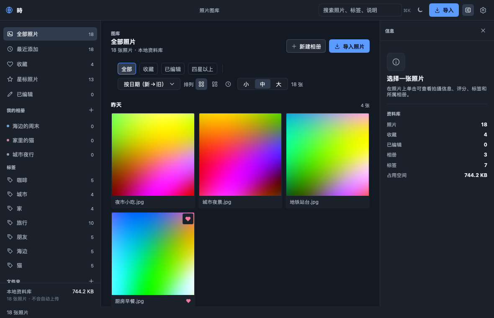
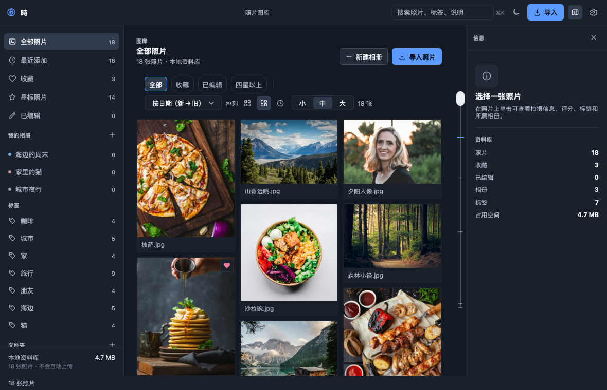
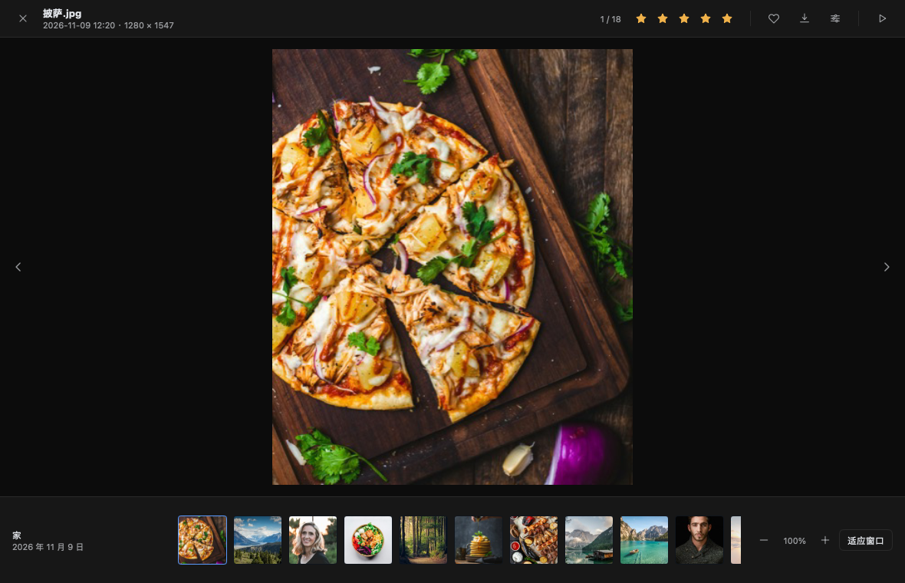
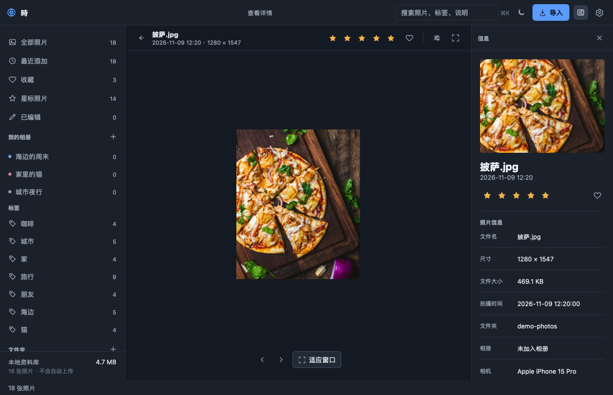
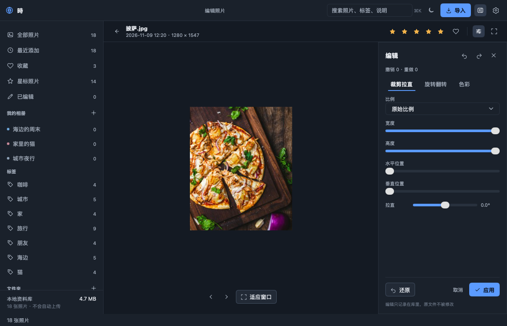
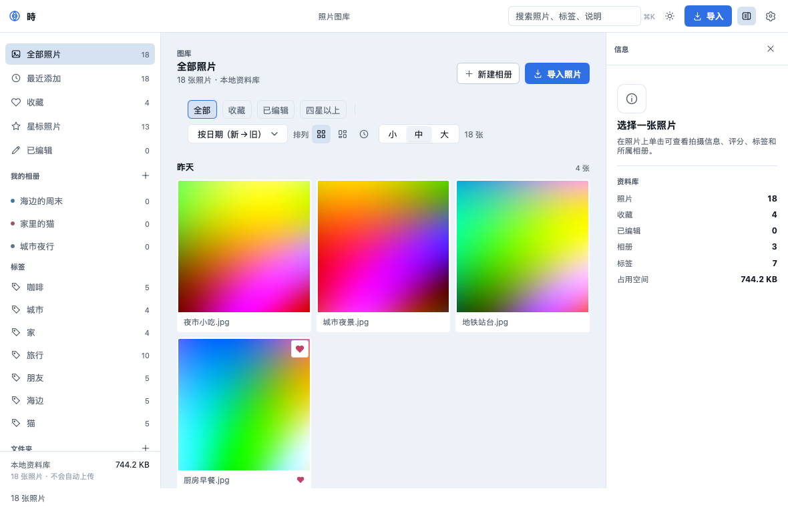
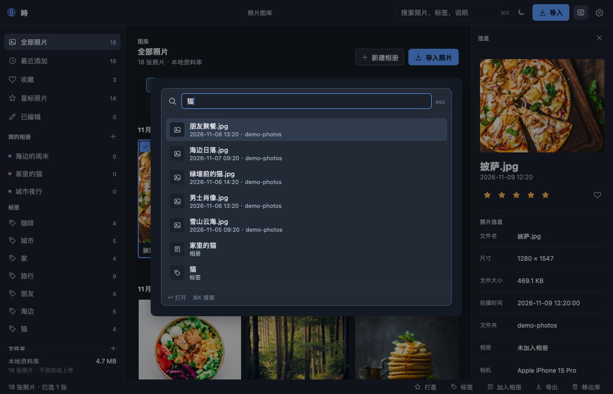

把照片留在自己的电脑里
Toki（時）是一个本地优先的照片库：纯 Go 写的原生桌面应用，整理、查看、编辑、导出都在本机完成。 不联网、不上传、没有账号。
macOS
Linux
Windows
纯 Go · 无 cgo
MIT

特性
该有的整理能力都在，界面保持安静。照片的原始文件永远只读——编辑只存在库里。
▦
三种照片墙
按日期分组的网格、按最矮列排布的瀑布流、每行一张的时间轴。布局与计数按变更缓存，只构建可见卡片，万张照片也顺手。
◎
查看器
深色舞台与胶片条，滚轮以光标为中心缩放（10%–800%）、拖动平移、幻灯片、键盘切换。
✦
整理与搜索
星标、收藏、标签、相册、文件夹与年份；文本 × 星级 × 来源 × 排序 × 筛选的组合搜索。
◐
非破坏性编辑
裁剪、拉直、旋转翻转，以及曝光、对比度、饱和度、色温、暗角；逐张撤销重做，预览与导出共用同一份结果。
↧
导出
8 档尺寸、4 档 JPEG 质量、文件名加序号、水印。原图不动，导出的是带编辑的副本。
◈
元数据与格式
读 EXIF，写 XMP（JPEG 内嵌，其它格式写边车）。JPEG、PNG、GIF（含动画）、BMP、WebP、TIFF。
↗
从 Finder 打开
已注册常见图片类型。把照片的「打开方式」设为 Toki 后，双击即进入查看器；库外文件按单张查看。
截图
深色与浅色两套主题，默认跟随系统外观。






下载
安装包由 GitHub Actions 在每次打标签时自动构建。
macOS
Universal（Apple 芯片与 Intel）· .dmg
Windows
64 位 · 安装程序 .exe
Linux
amd64 / arm64 · .tar.gz 与 .deb
macOS 构建为 ad-hoc 签名、未公证，首次打开需要在「系统设置 › 隐私与安全性」里允许。
也可以从源码构建：cd app && go tool mygo build（需要 Go 1.27+）。
技术栈
一个二进制、一套代码，没有 Electron、Node 或前端构建链。
Go 1.27语言与运行时，标准库为主
MyGo 0.8原生窗口与 UI，纯 Go、无 cgo
image / x/imageJPEG、PNG、GIF、WebP、TIFF 解码与缩放
JSON 库library.json 原子保存，无数据库依赖
GitHub Actions三平台测试与自动发布
MIT可自由使用、修改与分发